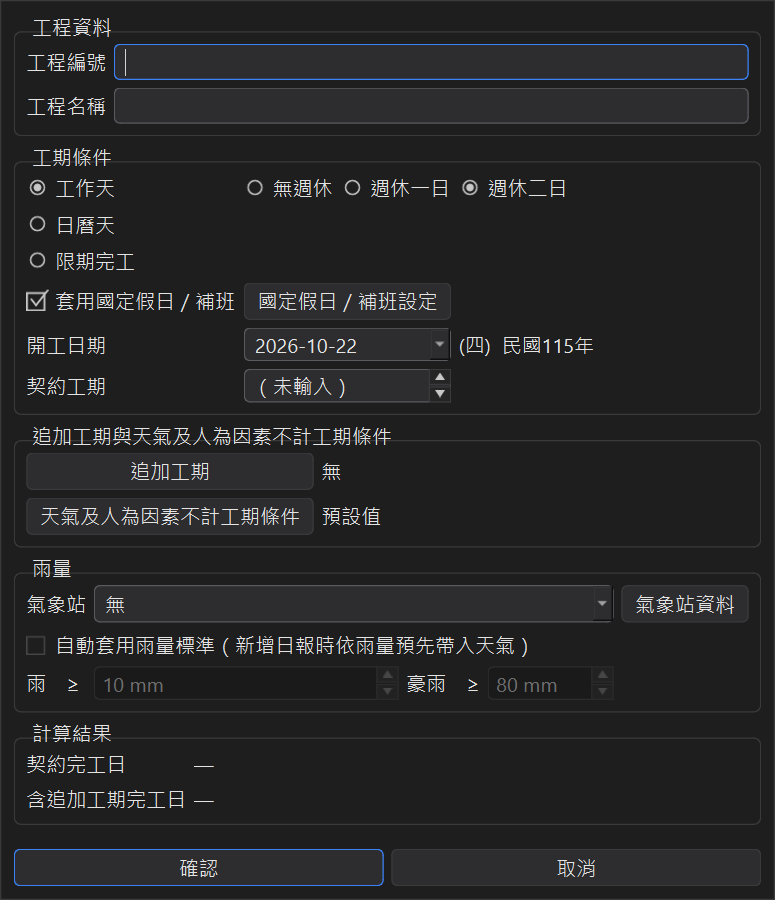
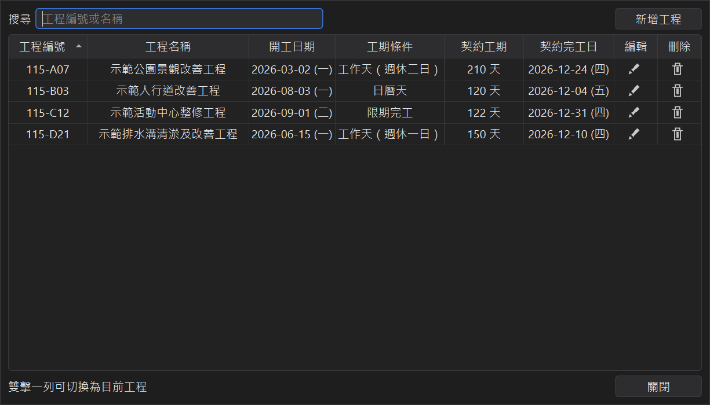

開始使用：選擇模式、認識主視窗、建立第一個工程
工期計算工具可以同時管理多個工程。每個工程有自己的工期條件、假日、追加工期與日報表， 主視窗上方選好目前工程，下方就顯示這個工程的資料與計算結果。
1、第一次啟動：選擇資料要存在哪裡
第一次開啟程式時，會詢問工程資料要存在哪裡：
● 單機模式：資料存在這台電腦，不需要登入，也不需要網路。
● 雲端模式：用 Google 帳號登入，資料存在雲端，換一台電腦登入同一個帳號就能繼續使用；需要網路。

選過之後程式會記住，下次直接開啟。想換模式時，從檔案 → 登出／切換模式，程式結束後下次啟動會再詢問一次。 兩種模式的差別與搬移資料的方法，請見匯入匯出與雲端模式。
2、主視窗

● 最上方目前工程：切換要看的工程；旁邊是工程總表與新增工程。
● 工程資料：工期條件、開工日期、契約工期、國定假日、追加工期、不計工期條件、氣象站與雨量標準。 要修改請按編輯工程；主視窗本身只顯示，不會不小心改到資料。
● 計算結果：
| 契約完工日 | 只依契約工期、工期條件與假日算出的完工日（不含追加工期）。 |
|---|---|
| 含追加工期完工日 | 契約完工日再加上所有追加工期。 |
| 最後一筆日報 | 目前填到哪一天、共填了幾天。 |
| 變動完工日 | 含追加工期，再依日報表扣掉不計工期的天數（算到最後一筆日報為止）。 |
右下角輸出預計完工表可以輸出整個工期的月曆表，請見輸出預計完工表與晴雨表。
3、建立第一個工程
按新增工程，輸入工程編號（必填，不能和其他工程重複）與工程名稱， 再選擇工期條件、開工日期與契約工期，下方會即時顯示契約完工日。

新工程預設是工作天（週休二日）、開工日為今天，並已帶入國定假日與補班日。 各種工期條件的差別請見工期條件與國定假日。
所有設定都是按確認才一起存檔；按取消的話，這次在視窗裡做的修改（包括假日、追加工期、不計工期條件）全部不會存。
4、工程總表
按主視窗的工程總表，列出所有工程的編號、名稱、開工日期、工期條件、契約工期與契約完工日。

● 上方搜尋可輸入工程編號或名稱篩選。
● 點欄位標題可以排序；工程編號會依數字大小自然排序（例如 2 排在 10 前面）。
● 每一列右邊可以編輯或刪除工程；雙擊一列就切換成目前工程。